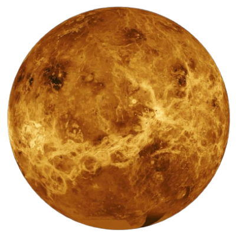

HW 1-2
Найближча до Сонця планета Сонячної системи. Обертається навколо Сонця за 87,969 земних діб. Меркурій належить до внутрішніх планет, оскільки його орбіта лежить ближче до Сонця, ніж пояс астероїдів. Після позбавлення Плутона статусу планети Меркурій є найменшою планетою Сонячної системи.

Друга від Сонця та шоста за розміром планета Сонячної системи. Період обертання навколо Сонця — 224,7 земних діб. Названа на честь Венери, богині кохання з римського пантеону. Це єдина з восьми планет
Сонячної системи, яка отримала назву на честь жіночого божества. За розміром майже така ж, як і Земля.

Третя від Сонця планета Сонячної системи, єдина планета, на якій відоме життя, домівка людства. Земля належить до планет земної групи і є найбільшою з цих планет у Сонячній системі. Землю іноді називають світом, латинською назвою Терра або грецькою — Гея.

Четверта планета Сонячної системи за відстанню від Сонця та сьома за розміром і масою. Названа на честь Марса — давньоримського бога війни. Іноді Марс називають «червоною планетою» через червонуватий
колір поверхні.

П'ята від Сонця та найбільша планета Сонячної системи. Відстань Юпітера від Сонця змінюється в межах від 4,95 до 5,45 а. о. (740—814 млн км), середня відстань 5,203 а. о. (778 млн км). Разом із Сатурном, Ураном і Нептуном Юпітер класифікують як газового гіганта.

Шоста за віддаленістю від Сонця та друга за розмірами планета Сонячної системи. Сатурн швидко
обертається навколо своєї осі (з періодом — 10,23 години), складається переважно з рідкого водню і гелію,
має товстий шар атмосфери. Навколо Сонця Сатурн обертається за 29,46 земних років на середній відстані
1427 млн км. Екваторіальний діаметр верхньої межі хмар — 120 536 км, а полярний — на кілька сотень кілометрів менший.

Сьома від Сонця велика планета Сонячної системи, що належить до планет-гігантів. Діаметр Урана в 4 рази,
а його маса — в 14,5 раза більші за земні, що робить його третьою за діаметром і четвертою за масою
планетою Сонячної системи.

Планета Сонячної системи, восьма за віддаленістю від Сонця. Вона четверта за розміром у Сонячній
системі, третя за масою і належить до планет-гігантів. Її орбіта перетинається з орбітою Плутона в деяких місцях. Також орбіту Нептуна перетинає комета Галлея комета Галлея. Маса Нептуна у 17,2 рази, а діаметр екватора у 3,9
рази більший за земний. Планета названа на честь римського бога морів.